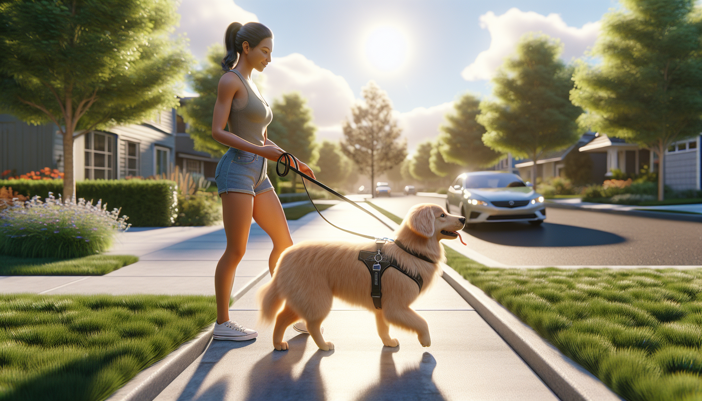

If every walk feels like a tug-of-war, you are not alone. Leash pulling is one of the most common challenges dog owners face, especially with energetic puppies, newly adopted rescue dogs, and curious adult dogs who have never been taught how to walk politely. The good news is that leash pulling is not a sign that your dog is stubborn, dominant, or trying to take control. In most cases, it simply means your dog has learned that pulling works.
Dogs pull because they want to get somewhere interesting: a smell, a person, another dog, a patch of grass, or simply forward motion. If pulling gets them where they want to go, the behavior is reinforced. That is why the most effective way to stop leash pulling is not punishment. It is clear, consistent, reward-based training that teaches your dog a better way to walk.
In this guide, you will learn exactly how to stop your dog from pulling on the leash using practical, science-backed methods that build focus, reduce frustration, and make walks more enjoyable for both of you.
Before you can fix leash pulling, it helps to understand why it happens. Dogs naturally walk faster than humans, and they explore the world with their noses. A leash limits movement, but it does not automatically teach a dog how to stay near you. Without training, most dogs will lean into pressure and move toward what interests them.
Common reasons dogs pull include:
This matters because the solution is not just to stop the pulling. It is to teach an alternative behavior: walking near you with a loose leash earns rewards, movement, and access to the environment.
The right gear will not train your dog for you, but it can make training safer and easier. For most dogs, a well-fitted front-clip harness or a comfortable Y-shaped harness paired with a standard leash is a good place to start. Front-clip harnesses can help reduce forward pulling by gently redirecting the dog’s body, while still allowing you to train without pain or force.
Helpful equipment includes:
Avoid retractable leashes during training because they often keep constant tension on the leash and make it harder for your dog to understand the difference between pulling and walking politely. Also avoid tools that rely on pain, fear, or intimidation, such as prong collars or harsh leash corrections. These methods may suppress behavior temporarily, but they do not teach your dog what to do instead, and they can increase stress, fear, or reactivity.
One of the biggest mistakes owners make is trying to teach leash manners in the most distracting environment possible. If your dog cannot focus in the living room, they are unlikely to succeed on a busy sidewalk. Start inside your home or in a quiet yard where your dog can practice without becoming overstimulated.
Begin by rewarding your dog for being near you. Put your dog on leash, take one step, and if the leash stays loose, mark the moment with “yes” or a click and give a treat. Take another step and repeat. The goal is to build a strong association: staying close to you and keeping the leash loose makes good things happen.
Practice these foundation exercises:
Keep sessions short and successful. Three to five minutes of focused practice is often more effective than a long session that ends in frustration.
Once your dog understands the basics indoors, gradually move to low-distraction outdoor areas. The key is to reward before your dog starts pulling, not only after the walk has already unraveled. Think of yourself as paying attention to the moments you want more of: a loose leash, eye contact, slowing down, turning with you, or walking next to you calmly.
When your dog is doing well, reward often. At first, this may mean giving treats every few steps. That is normal. As the behavior becomes stronger, you can slowly reduce the frequency of food rewards and replace some with praise, sniff breaks, or access to the environment.
One powerful concept is that movement itself can be a reward. If your dog wants to go say hello to a person or sniff a bush, they can earn that opportunity by walking with a loose leash. This teaches your dog that polite walking makes good things happen, while pulling does not.
Try this simple rule: loose leash makes the walk continue. Tight leash makes the walk pause.
Consistency is everything. If your dog sometimes gets to move forward while pulling, the behavior stays strong. The moment the leash becomes tight, calmly stop walking. Do not yank back, scold, or drag your dog. Just become a tree. Wait for any slack in the leash, or encourage your dog to reorient to you by taking a few steps backward or changing direction. As soon as the leash loosens, mark and continue.
This method works because it removes the reward your dog wanted: forward progress. Over time, your dog learns that pulling stalls the walk, while staying connected to you keeps things moving.
Here are three effective responses to pulling:
If your dog is pulling constantly, that is information. The environment may be too difficult, your rewards may not be valuable enough, or your dog may need more exercise or decompression before training.
Training goes much faster when your dog is not already over threshold. A dog who is bursting with energy, overwhelmed by traffic, or fixated on other dogs will struggle to learn. Instead of expecting perfect leash manners in every setting right away, make walks easier while your dog builds the skill.
Helpful ways to set your dog up for success include:
This is especially important for rescue adopters. Many rescue dogs are still adjusting to a new home, new routines, and a new neighborhood. Stress can make leash pulling worse. Be patient, keep expectations realistic, and focus on trust and predictability.
Many well-meaning owners accidentally reinforce pulling without realizing it. If training feels stuck, check for these common mistakes:
Remember, progress is rarely perfectly linear. Your puppy may do great one day and struggle the next. Your newly adopted dog may need several weeks before they can focus outside. That does not mean training is failing. It means your dog is learning in real life, with all the distractions and emotions that come with it.
If your dog’s pulling is paired with barking, lunging, fear, or intense reactivity, basic leash training may not be enough on its own. In those cases, working with a qualified, reward-based trainer or behavior professional can make a huge difference. This is also true if you have a large, powerful dog and walks feel physically unsafe.
Seek help if:
A good trainer can help you identify the cause of the pulling, adjust your training plan, and create realistic goals for your dog’s age, history, and temperament.
If you want to stop your dog from pulling on the leash, focus on teaching, not correcting. Reward the behavior you want, prevent your dog from practicing the behavior you do not want, and train in environments where your dog can succeed. With consistency, patience, and the right setup, even enthusiastic pullers can learn that walking calmly by your side is worth it.
Whether you are raising a puppy, helping a rescue dog settle in, or retraining an adult dog, small daily practice sessions can lead to big changes over time. Keep your expectations realistic, celebrate progress, and remember that every loose-leash step is a win.
Get our full Dog Training eBook series — new titles added weekly.